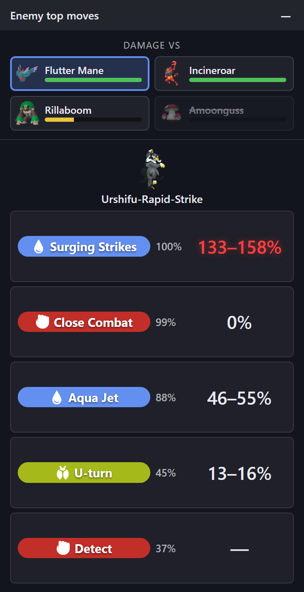
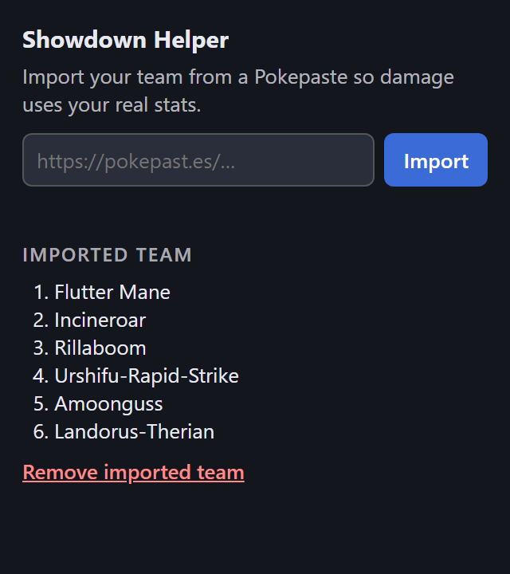

- Works on
- Pokémon Showdown
- Browser
- Chrome
- Price
- Free
Your opponent’s five most used moves, beside the battle
Showdown Helper is a Chrome extension for Pokémon Showdown. For each opposing Pokémon it lists the five moves players run most, and how much of your Pokémon’s HP each one takes.
It is not on the Chrome Web Store yet, so you install it from the code. That takes three steps.

Example matchup. Move usage is from Pikalytics (VGC Regulation F), fetched November 2026, and changes over time.
How to read the panel
The panel takes the right quarter of the Showdown page. The battle and the turn log stay on the left, so you never lose sight of them.
-
Pick the Pokémon that gets hit
The four boxes are the Pokémon you brought, each with its HP. Click one and every number below is damage to that Pokémon. Until the first turn it waits, because you have not picked your four yet.
-
See what the opponent can do
Each opposing Pokémon on the field gets a card. It holds the five moves players run most, taken from Pikalytics for the format you are playing. The colour and icon are the move’s type. The small percentage is how often players run it.
-
Check which moves can KO
The big number is the damage as a share of your Pokémon’s HP, from the lowest roll to the highest. It turns red when the highest roll could knock your Pokémon out. 0% means no effect: Close Combat cannot touch a Ghost-type like Flutter Mane.
-
Use your real stats
Click the extension’s icon in Chrome’s toolbar and paste a Pokepaste link. Damage then uses the natures, EVs and IVs from your paste, matched to your Pokémon by name. Remove the paste and it goes back to what Showdown reports.

Install it in three steps
You need Chrome (or another Chromium browser) and Node.js. It takes a few minutes.
-
Get the code
Clone the repository, or download it as a ZIP and unzip it.
Repositorygithub.com/lkz404/showdown-helper -
Build it
Open a terminal in the folder and run two commands.
Terminalnpm installnode build.mjs -
Load it in Chrome
Turn on Developer mode, choose Load unpacked, and pick the folder that holds
manifest.json. Then start a battle on Showdown.Address barchrome://extensions
Questions
Each answer comes from what the extension does today.
- Which opposing Pokémon does it show?
- The ones on the field right now, one card each. In doubles that is two cards. It updates after each move’s animation finishes.
- Does the panel cover the battle?
- No. Showdown shrinks to the left three quarters of the page and the panel takes the right quarter. You can collapse it to a small tab.
- Where does the move data come from?
- Pikalytics, for the format you are playing. If it has nothing for that format, the panel uses VGC Regulation F data and says so.
- How is the damage worked out?
- With the engine behind Showdown’s damage calculator. It assumes the opponent has maximum Attack or Special Attack. Your Pokémon use their real stats.
- Does it know the opponent’s item or Tera type?
- Only once Showdown shows them. Until then it assumes none, so read each number as a rough worst case, not a promise.
- Which browsers work?
- Chrome and other Chromium browsers. Firefox is not supported.
Load it before your next battle
Free, and the code is on GitHub.
Get the code on GitHub